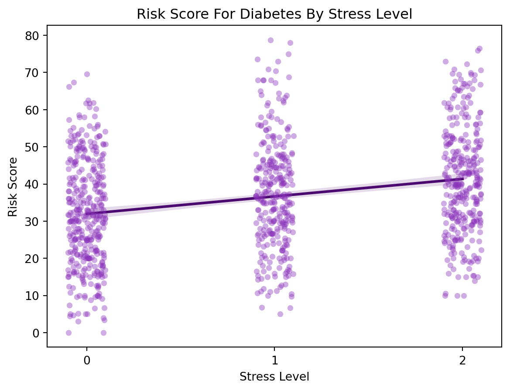

# For pulling the data
import kagglehub
# For loading in the data and data manipulation
import pandas as pd
# For making vizualizations
import matplotlib.pyplot as plt
import seaborn as snsVisualizing Synthetic Diabetes Data
Creating graphs to look at synthetic data
The data used here will come from user KevinTan701 at Kaggale. This dataset was synthetically generated to resemble real-world health information, covering data from 2021 to 2023.
I will create visualizations to better understand some of the assumptions made in the synthetically generated data.
Libraries and Data Importation
I will be pulling the data directly from kaggle using kagglehub.
# Download latest version
path = kagglehub.dataset_download("kevintan701/diabetes-prediction-datasets")
diabetes = pd.read_csv(path + "/diabetes_data.csv")[['weight', 'height', 'stress_level', 'risk_score']]
print(diabetes.head()) weight height stress_level risk_score
0 77.450712 183.993554 1 38.000000
1 67.926035 179.246337 2 39.162310
2 79.715328 170.596304 0 31.481633
3 92.845448 163.530632 1 45.000000
4 66.487699 176.982233 0 4.717234Data Vizualizations
First, I will visualize the relationship between stress level and the assigned risk score. I will recode the stress_level variable from having numerical values to having categorical.
stress_mapping = {0: 'Low', 1: 'Medium', 2: 'High'}
diabetes_cat = diabetes.copy()
diabetes_cat['stress_level'] = diabetes_cat['stress_level'].map(stress_mapping)After putting the data in the right format I can graph.
order = ['Low', 'Medium', 'High']
colors = {'Low': '#CB78F7', 'Medium': '#B19CD9', 'High': '#9941C7'}
sns.boxplot(diabetes_cat,
x='stress_level',
y='risk_score',
hue='stress_level',
order=order,
palette=colors)
plt.title("Risk Score For Diabetes By Stress Level\nBoxplot", loc="left")
plt.xlabel("Stress Level")
plt.ylabel("Risk Score For Diabetes")
plt.show()Here is the same data but as a jittered strip plot.
sns.stripplot(data=diabetes,
x='stress_level',
y='risk_score',
jitter=True,
color='#8931B9',
alpha=0.4)
sns.regplot(data=diabetes,
x='stress_level',
y='risk_score',
scatter=False,
color='#4B096F')
plt.title("Risk Score For Diabetes By Stress Level")
plt.xlabel("Stress Level")
plt.ylabel("Risk Score")
plt.show()
In this synthetic data, there appear to be more outliers for higher risk scores than usual in the medium stress level. I am curious about how this synthetic data was generated. With real-world data, I wonder how researchers categorize patients into stress level categories, as I imagine that most patients are likely to overestimate their stress levels rather than underestimate them. Perhaps researchers could use other indicators, such as hours at employment and type of employment, to more accurately categorize stress levels.
Now I will look at the relationship between height and weight in the dataset.
sns.scatterplot(data=diabetes,
x='height',
y='weight',
hue='risk_score')
sns.regplot(data=diabetes,
x='height',
y='weight',
scatter=False,
color='#4F0576',
ci=None)
plt.title("Height and Weight in Relationship with Diabetes Risk Score")
plt.xlabel("Height (cm)")
plt.ylabel("Weight (kg)")
plt.legend(title="Risk Score")
plt.show()There are a few observations we can make here. First, the data unexpectedly suggests that, on average, taller individuals tend to weigh less, which appears counterintuitive. Second, there seems to be a section in the middle of the plot, marked by a cluster of dots in a lighter pink color, that slopes upwards in the center. The synthetic data indicates that there may be an optimal weight-to-height region that is associated with a lower diabetes risk score.